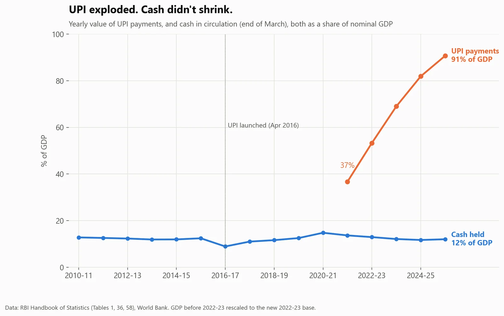
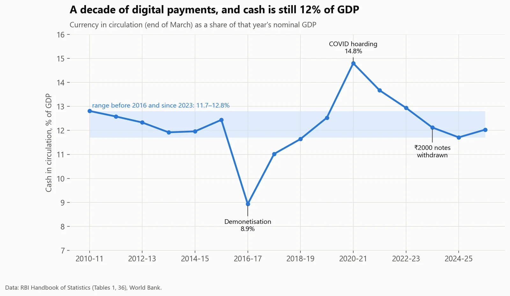
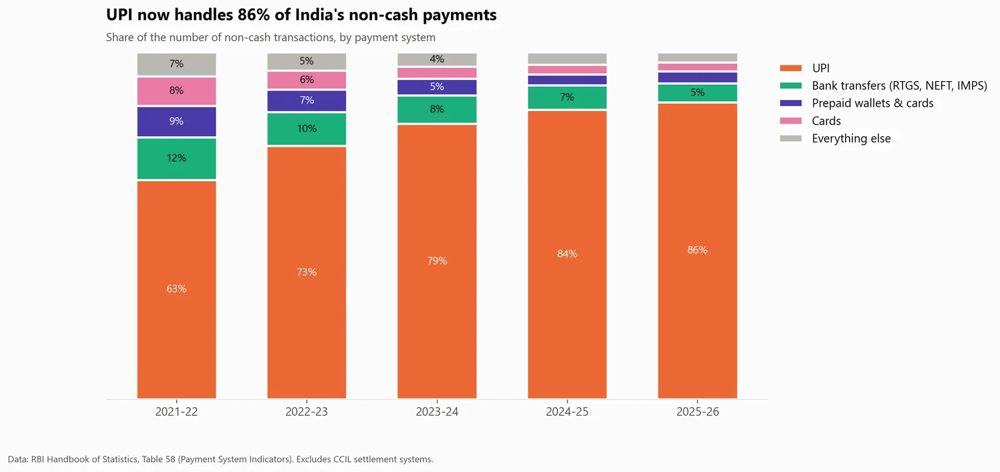
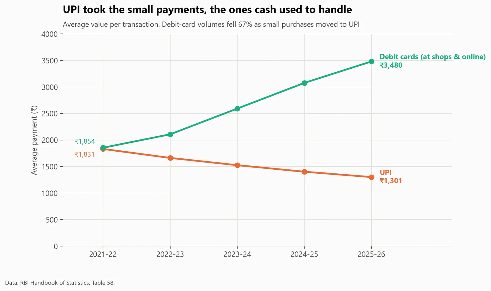
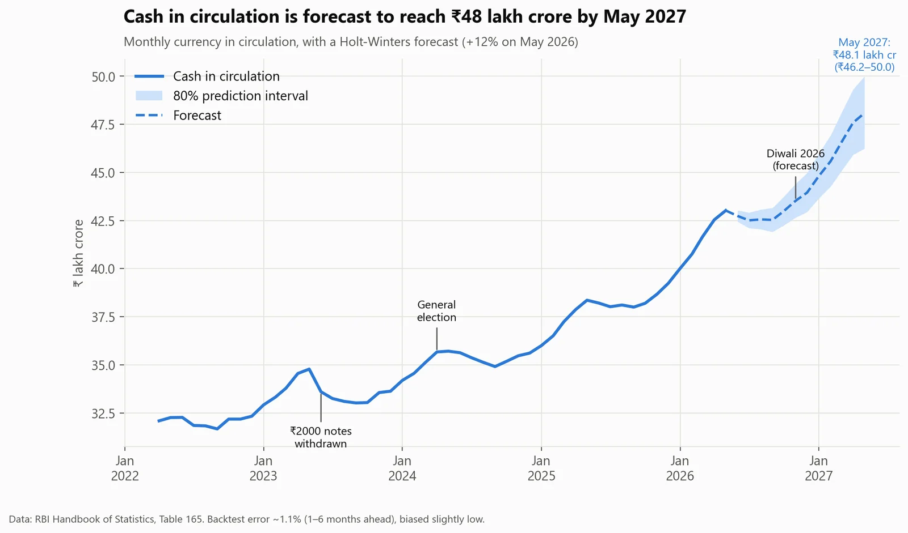

Work/PRJ-07/Finance · India
UPI won. So why is India holding more cash than ever?
Because cash was never just for paying. UPI's yearly value grew from 37% to 91% of GDP in four years, yet cash in circulation is still about 12% of GDP, the same as in 2014-15, before UPI existed. UPI replaced cash for spending, not for saving.
- Data
- Reserve Bank of India statistics (4 tables), World Bank GDP
- Period
- 2010-11 to 2025-26
- Tools
- SQL (DuckDB), Python (statsmodels)
- Code
- github.com/BoredMongoose/upi-cash-paradox ↗
Business question
UPI won. Should banks plan for less cash?
Recommendation
Plan cash logistics (ATMs, currency chests, note printing) for steady growth, not decline: cash is forecast to reach ₹48 lakh crore by May 2027.
Estimated impact1.1%
Average error of the cash-demand forecast in a 25-period backtest (forecast: ₹48.1 lakh crore by May 2027, 80% range ₹46.2–50.0).
01Results
UPI exploded. Cash didn't shrink.





02How I did it
From raw data to a decision.
- Read four messy RBI Excel tables into clean tables with Python.
- Built the analysis in SQL: staging tables, a consistent GDP series, then summary tables for each question. India changed its GDP base year in 2022-23, so older GDP values were rescaled using the year published on both bases. Without that, the cash-to-GDP ratio would show a fake 3% jump.
- Added 15 automated data-quality checks. For example, RBI's monthly and annual tables must agree for every March, and the individual payment systems must add up to RBI's reported totals.
- Compared three forecasting methods on 25 past periods before choosing Holt-Winters.
03What could make this wrong
The limits, said out loud.
- 01Cash in circulation is a stock (measured at the end of March); UPI value is a flow (added up over the year). The chart compares their trends, not their sizes.
- 02There's no direct measure of how often people use cash, such as ATM withdrawals. "UPI took the small payments" is inferred from ticket sizes and card volumes.
- 03Official UPI figures in this source start in 2021-22.
04What I learned
- 01Ratios can lie when a definition changes: India's GDP base-year change would have created a fake 3-point jump in cash-to-GDP.
- 02Stocks and flows can be compared on trend, not on size.
- 03Checking two official tables against each other catches errors neither shows alone.
05What I'd do next
- 01Add ATM withdrawal data, to measure how much cash is actually used, not just held.
- 02Break cash demand down by region and note denomination.
- 03Re-run the forecast as each month's RBI data arrives and track its errors.